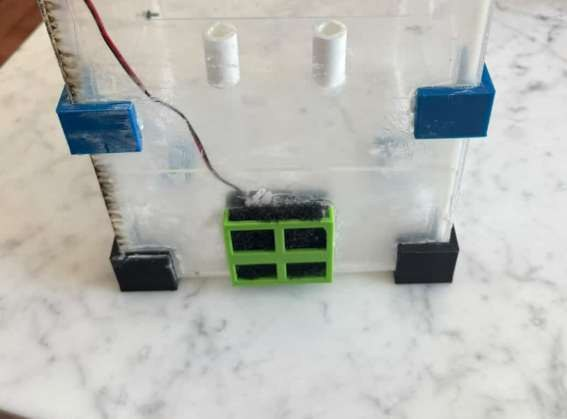
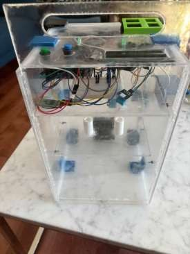
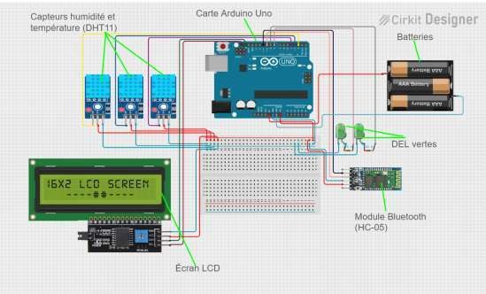

Project 03 · Mechanical design & prototyping
ZEIKU: a contamination-free swab dryer
Ottawa Police labs dry forensic DNA swabs by hand and judge dryness by eye. A badly dried swab can spoil the sample, skew results and risk cross-contamination. Our five-person team designed a sealed, portable box that dries two swabs side by side, measures humidity in real time and lights up when each swab is dry.
ClientOttawa Police
CourseGNG1503 · uOttawa
DateFall 2025
Team5 students
My roleMechanical
FabricationLaser-cut acrylic · 3D-printed PLA
19×19×29cm
Sealed acrylic enclosure
≥3cm
Minimum swab spacing, set by our cross-contamination test
2.6CFM
Airflow needed. The 40 mm fan supplies 3 to 5
+2% RH
Dryness threshold relative to ambient humidity
What the client needed
- Drying without handling during the process, and no opening the box to check.
- Clear, reliable confirmation that a swab is dry.
- A compact, hygienic device that is easy to clean.
- Automatic temperature and humidity logging to prove the process worked.
Mechanical design
- Enclosure: rigid, non-porous acrylic that is easy to disinfect, reinforced with 3D-printed PLA brackets in the corners and along the edges.
- Sliding door on rails, so the box opens in one motion without disturbing the samples.
- Rail-mounted, removable shelves for the swab holder and the electronics. Everything comes out for cleaning without tools.
- Ventilation: 5×5 cm cut-out, 3D-printed fan mount with M3 screws, outer grille and a foam-filter frame, so only filtered air reaches the chamber.
Design decisions
| Choice | Picked | Why |
|---|---|---|
| Fan size | 40 mm | Best flow-to-noise trade-off. 30 and 60 mm were considered and rejected |
| Filter | Fine foam | HEPA is too restrictive for a small 40 mm fan |
| Mount material | PLA | Easy to print and not thermally critical, so no need for PETG |
| Humidity sensors | DHT11 | Accurate enough in testing, so the pricier DHT22 wasn't needed |
| Data link | Bluetooth | The electronics shelf sits inside the sealed box, where a USB cable is impractical |
Sizing the airflow
openingA = 5 cm × 5 cm = 0.0025 m²
targetv ≈ 0.5 m/s
flowQ = A·v = 0.00125 m³/s ≈ 4.5 m³/h ≈ 2.6 CFM
supply5 V, 40 mm fan → 3–5 CFM ✓ adequate
targetv ≈ 0.5 m/s
flowQ = A·v = 0.00125 m³/s ≈ 4.5 m³/h ≈ 2.6 CFM
supply5 V, 40 mm fan → 3–5 CFM ✓ adequate
Testing
| Test | Method | Result |
|---|---|---|
| Cross-contamination | Two swabs at 1, 3 and 5 cm, one with a tracer, fan on for 30 min | Contaminated at 1 cm, clean at 3 and 5 cm. Rule: ≥3 cm |
| Fan mount | 5 V fan on its printed mount, flow checked with light paper, noise and stability observed | Steady flow, no excessive vibration, filter doesn't choke the fan |
| Dryness detection | Wet swab placed under each sensor | Green LED on once dry, on every trial |
| Data logging | Sensors streamed over Bluetooth to Excel | All readings received and saved |
What I'd do next. Hold more than two swabs, bring detection time under 30 minutes, and close the loop with PWM fan control driven by the humidity sensors.


